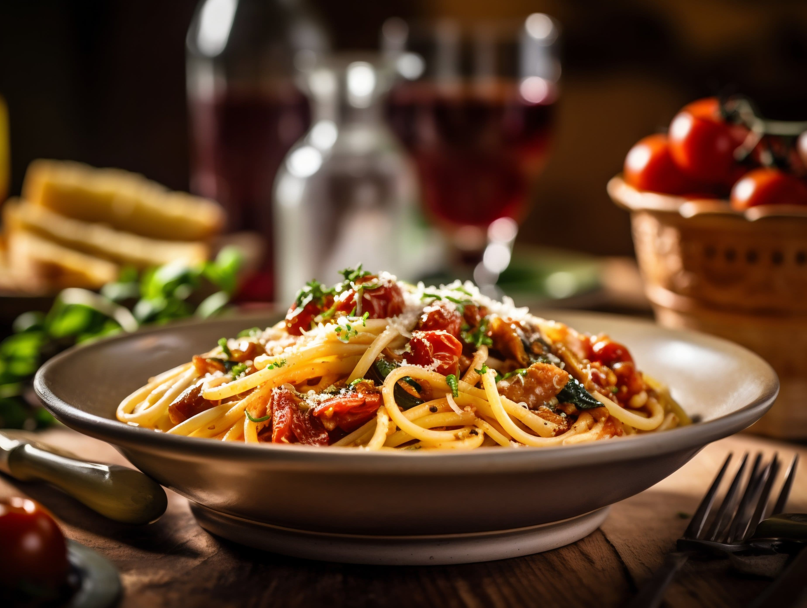
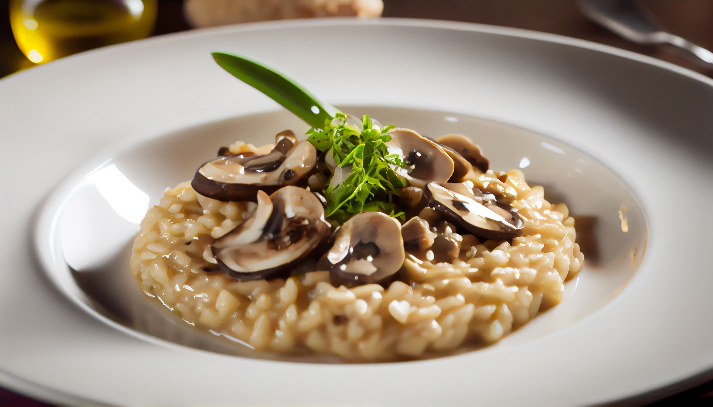

Marinate the chicken with olive oil, salt, pepper, garlic powder, paprika, and lemon juice for at least 30 minutes.
Preheat the grill to medium-high heat.
Grill the chicken for about 6-7 minutes on each side until fully cooked.
Let it rest for 5 minutes before serving.
Tip: Serve with mashed potatoes and steamed vegetables for a balanced meal!
Classic Spaghetti Carbonara
Cooking Time: 25 minutes

Ingredients:
200g spaghetti
100g pancetta or bacon, diced
2 eggs
50g Parmesan cheese, grated
1 tsp black pepper
1 tbsp olive oil
Instructions:
Cook the spaghetti according to the package instructions.
Fry the pancetta in olive oil until crispy.
In a bowl, whisk together eggs, Parmesan cheese, and black pepper.
Mix the hot spaghetti with the pancetta, then quickly stir in the egg mixture to create a creamy sauce.
Serve immediately with extra Parmesan on top.
Tip: Make sure to mix the egg sauce off the heat to prevent scrambling!
Beef Wellington
Cooking Time: 90 minutes
Ingredients:
500g beef tenderloin
250g mushrooms, finely chopped
4 slices prosciutto
2 tbsp Dijon mustard
1 sheet puff pastry
1 egg yolk (for egg wash)
Salt and pepper to taste
Instructions:
Season the beef tenderloin with salt and pepper, then sear it in a hot pan.
Spread Dijon mustard over the beef and let it cool.
Cook mushrooms until all moisture evaporates, then layer over prosciutto.
Wrap the beef in the prosciutto and mushroom mixture, then encase in puff pastry.
Brush with egg yolk and bake at 200°C for 30-35 minutes.
Let it rest before slicing and serving.
Tip: Use a meat thermometer to ensure perfect doneness!
Classic Beef Burger
Cooking Time: 20 minutes
Ingredients:
250g ground beef
1 tsp salt
½ tsp black pepper
½ tsp garlic powder
1 tbsp Worcestershire sauce
2 slices cheddar cheese
2 burger buns
Lettuce, tomato, onion, and sauce of choice
Instructions:
Mix the ground beef with salt, pepper, garlic powder, and Worcestershire sauce.
Shape into patties and grill for 3-4 minutes per side.
Add cheese on top of the hot patty to melt.
Lightly toast the buns and assemble the burger with lettuce, tomato, patty, and your favorite sauce.
Don’t press the patty while cooking—it keeps the juices inside!
Use brioche buns for extra softness and flavor.
Classic Beef Steak
Cooking Time: 15 minutes
Ingredients:
1 beef steak (ribeye/sirloin)
2 tbsp butter
2 garlic cloves, smashed
1 tsp salt & black pepper
1 tbsp olive oil
1 sprig of rosemary or thyme
Instructions:
Heat a pan, add olive oil, and sear the steak for 2-3 minutes per side.
Add butter, garlic, and rosemary, then baste the steak with melted butter.
Let it rest for 5 minutes before slicing.
Let the steak sit at room temperature before cooking for even doneness,
Use a meat thermometer for perfect doneness: 50°C (rare), 60°C (medium), 70°C (well done).
Herb-Crusted Lamb Steak
Cooking Time: 25 minutes
Ingredients:
1 lamb steak
2 tbsp olive oil
2 cloves garlic, minced
1 tbsp fresh rosemary, chopped
1 tbsp fresh thyme, chopped
Salt & black pepper to taste
Instructions:
Rub the lamb steak with olive oil, garlic, herbs, salt, and pepper.
Sear in a hot pan for 3-4 minutes per side.
Finish in a 180°C oven for 10 minutes.
Rest for 5 minutes before slicing.
Lamb is best served medium-rare (60°C internal temp).
Pair with mint sauce for extra flavor.
Pan-Seared Salmon Steak
Cooking Time: 15 minutes
Ingredients:
1 salmon steak
1 tbsp olive oil
1 tbsp butter
1 tsp lemon juice
1 clove garlic, minced
Salt & black pepper to taste
Instructions:
Season salmon with salt and pepper.
Heat olive oil in a pan and sear salmon for 3-4 minutes per side.
Add butter, garlic, and lemon juice, then baste the salmon.
Serve with vegetables or rice.
Use a non-stick pan for a crispy skin.
Don’t overcook; salmon is best at 52-54°C internal temp.
Crispy Fish Steak
Cooking Time: 20 minutes
Ingredients:
1 white fish fillet (cod, snapper, or tilapia)
50g all-purpose flour
1 egg, beaten
50g breadcrumbs
Salt & black pepper to taste
Cooking oil
Instructions:
Season fish with salt and pepper.
Coat with flour, dip in beaten egg, then cover with breadcrumbs.
Fry in hot oil for 3-4 minutes per side until golden brown.
Serve with tartar sauce or lemon wedges.
For extra crunch, use panko breadcrumbs.
Don’t overcrowd the pan; fry in batches if needed.
English Platter
Cooking Time: 25 minutes
Ingredients:
2 grilled sausages
2 fried eggs
2 strips of crispy bacon
Grilled tomatoes and mushrooms
1 slice of toast with butter
Baked beans
Instructions:
Grill sausages and bacon until crispy.
Fry eggs to your preference.
Grill tomatoes and mushrooms with a bit of olive oil.
Toast the bread and serve everything on a plate with baked beans.
Tip: Serve with a cup of English breakfast tea for an authentic touch!
English Breakfast
Cooking Time: 30 minutes
Ingredients:
2 fried eggs
2 sausages
2 slices of bacon
1 slice of fried bread
Baked beans
Grilled mushrooms and tomatoes
Hash browns
Instructions:
Fry sausages and bacon until golden brown.
Fry eggs and bread in the same pan.
Heat baked beans and grill tomatoes and mushrooms.
Serve hot with hash browns.
Tip: Add black pudding for an even more traditional breakfast.
American Breakfast
Cooking Time: 20 minutes
Ingredients:
2 pancakes
2 scrambled eggs
2 strips of bacon
Maple syrup
Butter
Instructions:
Cook pancakes until golden brown.
Scramble eggs with a bit of butter.
Fry bacon until crispy.
Serve pancakes with butter and maple syrup alongside eggs and bacon.
Tip: Add fresh fruits like strawberries or blueberries for extra flavor.
Rijsttafel Fried Rice
Cooking Time: 25 minutes
Ingredients:
2 cups of cooked rice
100g shrimp
1 egg
2 tbsp soy sauce
1 tbsp kecap manis (sweet soy sauce)
1 clove garlic, minced
Vegetables (carrot, green beans)
Condiment:
50gr beef rendang
50gr chicken katsu
1 scramble egg
2 tbsp soy sauce
pikles
2pcs chicken drum stick
mix salad
Instructions:
Fry garlic until fragrant.
Add shrimp and cook until pink.
Push shrimp to one side, crack in an egg, and scramble.
Add rice, soy sauce, and kecap manis, stir-fry well.
Mix in vegetables and cook for 2 more minutes.
Tip: Serve with prawn crackers and fried shallots for extra crunch.
Risotto
Cooking Time: 35 minutes

Ingredients:
1 cup Arborio rice
4 cups chicken broth
1 small onion, finely chopped
2 tbsp butter
50g Parmesan cheese
1/2 cup white wine
Salt & pepper to taste
Instructions:
In a pan, sauté onion with butter until soft.
Add rice and toast for 2 minutes.
Pour in white wine and let it evaporate.
Gradually add chicken broth, stirring until absorbed.
Repeat until rice is creamy and tender.
Mix in Parmesan cheese, season with salt and pepper.
Tip: Stir constantly for a perfect creamy texture.